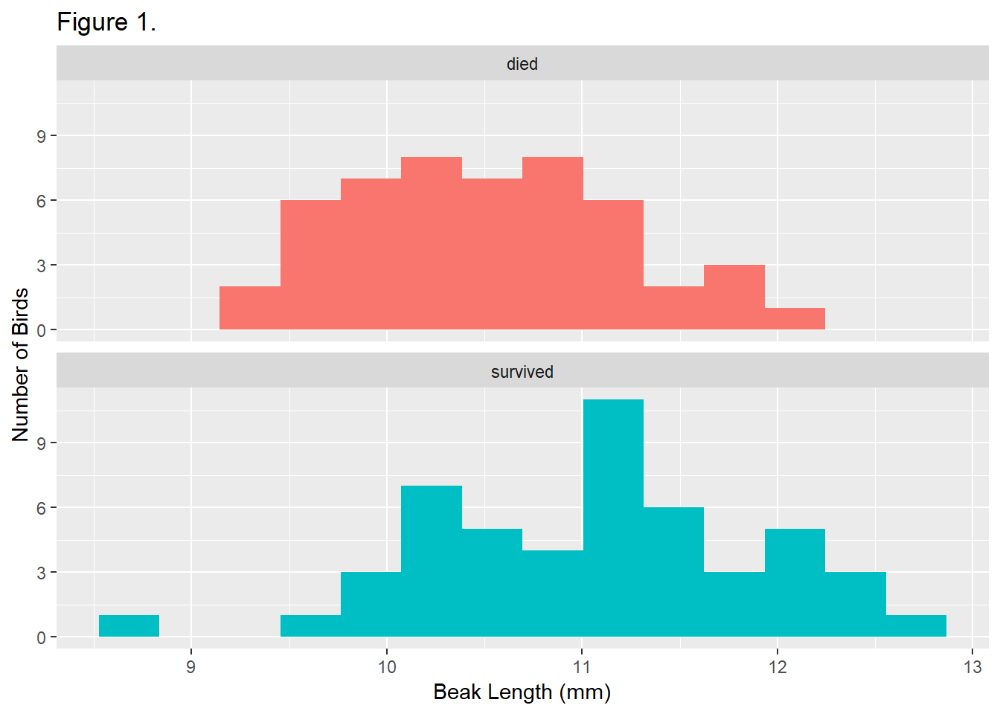
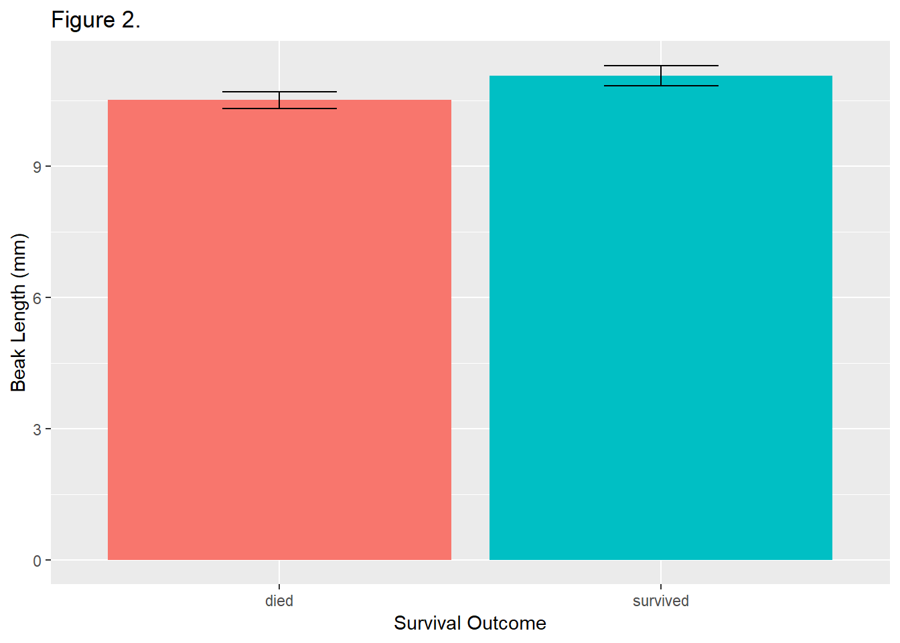

Load the packages
Read the data from the included excel file.
# read data ---------------------------------------------------------------
# read the finches data
finches <- read_excel("finches_data.xlsx")
# print the finches tibble in the console
finches# A tibble: 100 x 12
band species sex first_adult_year last_year outcome weight wing
<dbl> <chr> <chr> <dbl> <dbl> <chr> <dbl> <dbl>
1 9 Geospi~ unkn~ 1975 1977 died 14.5 67
2 12 Geospi~ fema~ 1975 1977 died 13.5 66
3 276 Geospi~ unkn~ 1976 1977 died 16.4 64.2
4 278 Geospi~ unkn~ 1976 1977 died 18.5 67.2
5 283 Geospi~ male 1976 1977 died 17.4 70.2
6 288 Geospi~ unkn~ 1976 1977 died 16.3 71.2
7 293 Geospi~ unkn~ 1976 1977 died 15.7 67.2
8 294 Geospi~ unkn~ 1976 1977 died 16.8 68.2
9 298 Geospi~ male 1976 1977 died 15.5 68.2
10 307 Geospi~ male 1975 1977 died 17.5 70
# ... with 90 more rows, and 4 more variables: tarsus <dbl>,
# beak_length <dbl>, beak_depth <dbl>, beak_width <dbl>Observations: 100
Variables: 12
$ band <dbl> 9, 12, 276, 278, 283, 288, 293, 294, 298, 307...
$ species <chr> "Geospiza fortis", "Geospiza fortis", "Geospi...
$ sex <chr> "unknown", "female", "unknown", "unknown", "m...
$ first_adult_year <dbl> 1975, 1975, 1976, 1976, 1976, 1976, 1976, 197...
$ last_year <dbl> 1977, 1977, 1977, 1977, 1977, 1977, 1977, 197...
$ outcome <chr> "died", "died", "died", "died", "died", "died...
$ weight <dbl> 14.50, 13.50, 16.44, 18.54, 17.44, 16.34, 15....
$ wing <dbl> 67.00, 66.00, 64.19, 67.19, 70.19, 71.19, 67....
$ tarsus <dbl> 18.00, 18.30, 18.47, 19.27, 19.27, 20.27, 17....
$ beak_length <dbl> 9.20, 9.50, 9.93, 11.13, 12.13, 10.63, 9.93, ...
$ beak_depth <dbl> 8.3, 7.5, 8.0, 10.6, 11.2, 9.1, 9.5, 10.5, 8....
$ beak_width <dbl> 8.1, 7.5, 7.6, 9.4, 9.5, 8.8, 8.9, 9.1, 8.2, ...Plot a histogram of beak length
# histogram ---------------------------------------------------------------
# histogram of beak length, grouped by survival, with labels
ggplot(
data = finches, # use the finches dataset
mapping = aes(x = beak_length, # put beak length on the x axis
fill = outcome) # fill sets the color of the boxes
) +
geom_histogram(bins = 14) + # add the histogram, use 14 bins
facet_wrap(~ outcome, ncol = 1) + # outcome is the grouping variable
guides(fill = FALSE) + # don't show a legend for fll color
labs(
title = "Figure 1.", # title
x = "Beak Length (mm)", # x-axis label
y = "Number of Birds" # y-axis label
)
Summarize the data set by groups, birds that survived versus those that died.
# summarize ---------------------------------------------------------------
# summarize the dataset by outcome (survived vs. died)
beak_length_grouped_summary <-
finches %>%
group_by(outcome) %>%
summarize(mean = mean(beak_length),
sd = sd(beak_length),
n = n()) %>%
mutate(sem = sd / sqrt(n),
upper = mean + 1.96 * sem,
lower = mean - 1.96 * sem)
# print the results in the console
beak_length_grouped_summary# A tibble: 2 x 7
outcome mean sd n sem upper lower
<chr> <dbl> <dbl> <int> <dbl> <dbl> <dbl>
1 died 10.5 0.698 50 0.0987 10.7 10.3
2 survived 11.1 0.840 50 0.119 11.3 10.8Now plot the output as a bar chart.
# bar chart ---------------------------------------------------------------
# bar chart of mean beak lengths
ggplot(
data = beak_length_grouped_summary, # dont use the original finches dataset
mapping = aes(x = outcome, # survival on the x axis
y = mean, # mean beak length on the y axis
fill = outcome) # make died/survived different colors
) +
geom_col() + # add columns
geom_errorbar( # add error bars
mapping = aes(ymin = lower, # lower 95% confidence limit
ymax = upper), # upper 95% confidence limit
width = .3 # width of horizontal part of bars
) +
guides(fill = FALSE) + # don't show a legend for fll color
labs(
title = "Figure 2.", # title
x = "Survival Outcome", # x-axis label
y = "Beak Length (mm)" # y-axis label
)
Compare the lengths of beaks of birds that died versus those that survived using a t-test.
# t-test ------------------------------------------------------------------
# get a vector of beak lengths for birds that died
beak_length_died <-
finches %>% # start with finches dataset
filter(outcome == "died") %>% # only include rows w/ outcome=died
pull(beak_length) # extract the beak_length column
# print the new object in the console... it is a vector
beak_length_died [1] 9.20 9.50 9.93 11.13 12.13 10.63 9.93 11.33 9.93 11.10 10.80
[12] 9.70 10.60 9.60 10.50 9.90 9.60 10.70 9.30 10.10 9.70 11.00
[23] 11.00 11.60 10.50 10.20 9.70 11.10 11.10 10.20 10.80 10.00 11.10
[34] 10.30 11.10 10.50 11.00 10.00 10.30 11.70 10.20 10.90 11.90 10.20
[45] 10.50 10.50 9.80 11.80 11.00 10.30# get a vector of beak lengths for birds that survived
beak_length_survived <-
finches %>%
filter(outcome == "survived") %>%
pull(beak_length)
# print the results in the console
beak_length_survived [1] 11.50 10.20 12.10 11.60 10.30 11.40 8.70 9.90 10.20 10.30 11.43
[12] 11.93 11.03 10.63 10.83 11.23 11.23 10.23 11.63 12.23 11.03 11.13
[23] 10.93 11.03 10.23 11.33 10.03 10.70 10.00 12.43 11.09 9.63 11.60
[34] 11.30 12.13 12.03 10.63 11.83 12.43 12.73 10.33 11.03 12.53 12.13
[45] 10.43 10.53 11.23 11.23 10.90 10.50# perform a two-sample t-test assuming unequal variances
t.test(beak_length_died, beak_length_survived)
Welch Two Sample t-test
data: beak_length_died and beak_length_survived
t = -3.6335, df = 94.807, p-value = 0.0004539
alternative hypothesis: true difference in means is not equal to 0
95 percent confidence interval:
-0.8681443 -0.2546557
sample estimates:
mean of x mean of y
10.5122 11.0736